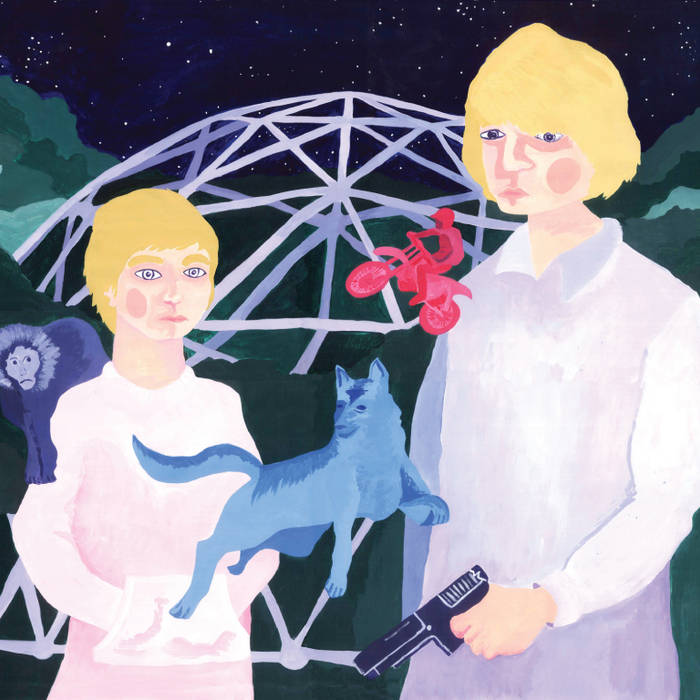
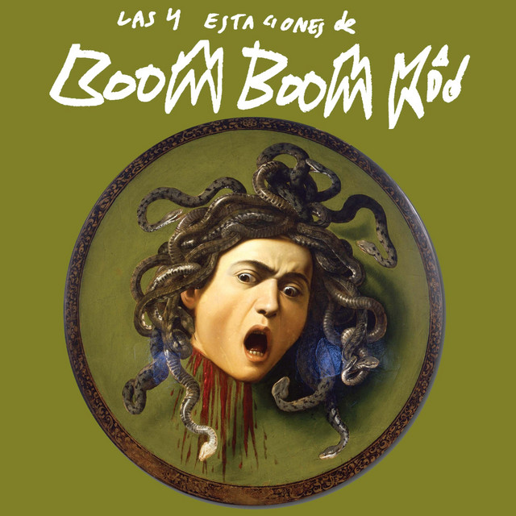
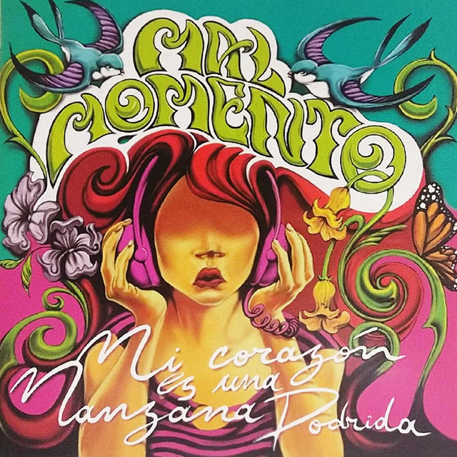

Ultimos dias del tren fantasma - 107 Faunos
Grabado por Pablo Barros en Estudios Ion y DDR. Mezclado en DDR Recordings. Mezclado por Pablo Barros en la casa de Pablito y DDR Recordings.
Escuchalo acá

Las cuatro estaciones de Boom boom kid
Grabado, mezclado y masterizado por Marcelo Belén en el estudio DDR recordings en el año 2017. producido por Marcelo belen.
Escuchalo acá

Mi Corazón es una manzana podrida - Mal momento
Grabado, mezclado y masterizado en el Otoño del 2017 en DDR recordings.
Escuchalo acá